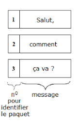
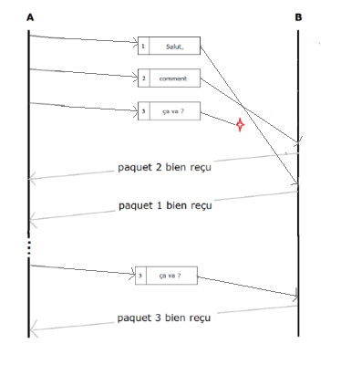
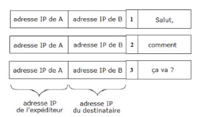
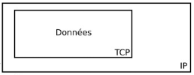

Pour communiquer, les ordinateurs (ou tous autres appareils connectés entre eux) utilisent des ensemble de règles appelées protocoles. Il existe de nombreux protocoles, chacun d'entre eux réalisant une tâche bien précise.
Nous allons voir dans ce cours le rôle des protocoles TCP et IP.
Le principe du protocole TCP (Transfert Control Protocol), est similaire à l'expédition d'un colis par la poste. Admettons que vous ayez commandé un meuble en kit à l'entreprise Dupont en Suède. Dupont ne peut pas envoyer un énorme carton avec le meuble entier, alors il décide de l'envoyer pièce par pièce en empaquetant chaque pièce soigneusement.
Ensuite, Dupont amène tous les paquets à la poste de son quartier. Celle-ci va les transporter jusqu'à la poste centrale qui dirigera certains paquets vers l'aéroport pour un transport aérien, d'autres vers une gare pour un transport ferroviaire, d'autres vers un port pour un transport fluvial... On peut imaginer toutes les possibilités qui vont amener les paquets jusqu'à vous.
Lorsque vous recevez les colis, comme Dupont a joint la notice de montage à chaque paquet, vous pouvez vérifier s'il ne manque pas une pièce et éventuellement faire une réclamation.
C'est le même principe pour le réseau informatique !Un utilisateur A veut envoyer le message "Salut, comment ça va ?" à un utilisateur B.
Le message est décomposé en paquets qui contiennent chacun un bloc de données (le nombre de paquets dépend de la taille du message) : c'est le rôle du protocole TCP.
Ensuite, chaque paquet va transiter par différents points dans le réseau jusqu'à atteindre le destinataire. Chaque paquet peut avoir une route différente.
À l'arrivée, le protocole TCP permet de reconstituer le message envoyé à partir de tous les paquets reçus, et éventuellement de renvoyer d'éventuels paquets perdus :
 DéfinitionLe rôle du protocole TCP est de découper les données à envoyer en plusieurs paquets numérotés.
Une fois le meuble découper en plusieurs paquets numérotés, les boites sont transmises au service postal de l'entreprise dont le rôle est de coller les adresses postales du destinataire et de l'expéditeur sur chacune d'entre-elles.
Pour reprendre l'exemple de l'envoi du message "Salut, comment ça va ?" de A à B, le protocole TCP avait découpé et numéroté ce message en trois paquets, et le protocole IP va donc ajouter à chacun de ces paquets l'adresse IP de A et celle de B :
C'est grâce à l'adresse IP de B (destinataire) que les paquets arrivent au bon endroit et c'est grâce à l'adresse IP de A (expéditeur) que les accusés de réceptions arrivent au bon endroit.
Définitions :Le rôle du protocole IP (Internet protocol) est d'ajouter l'adresse IP de l'expéditeur et celle du destinataire à chaque paquet de données créé par le protocole TCP.
L'adresse IP est une adresse unique attribuée à chaque objet connecté qui, comme l'adresse postale sur une lettre, permet d'identifier de manière unique le destinataire et l'expéditeur. Elles sont représentées par 4 valeurs entre 0 et 255 chacune quand on utilise la version la plus courante d'IP (IPv4) et 64 valeurs avec IPv6.
Encapsulation :Le protocole IP encapsule les données issues du protocole TCP :
Vous voulez envoyer une photo à un de vos camarades présent dans la classe (le destinataire ne doit pas être votre voisin). Pour cela, vous allez mettre en œuvre les protocoles TCP et IP à l'aide du matériel qui vous est fourni.
. . . . . . . . . . . . . . . . . . . . . . . . . . . . . . . . . . . . . . . . . . . . . . . . . . . . . . . . . . . . . . . . . . . . . . . . . . . . . . . . . . . . . . . . . . . . . . . . . . . . . . . . . . . . . . . . . . . . . . . . . . . . . . . . . . . . . . . . . . . . . . . . . . . . . . . . . . . . . . . . . . . . . . . . . . . . . . . . . . . . . . . . . . . . . . . . . . . . . . . . . . . . . . . . . . . . . . . . . . . . . . . . . . . . . . . . . . . . . . . . . . . . . . . . . . . . . . . . . . . . . . . . . . .
Si vous recevez un paquet qui ne vous est pas destiné :
Si vous recevez un paquet qui vous est destiné :
Une fois tous les paquets reçus, reconstituer votre image.